This package contains basic mathematical operations, such as summation and multiplication, and basic mathematical functions, such as sqrt and sin, as input/output blocks. All blocks of this library can be either connected with continuous blocks or with sampled-data blocks.
Extends from Modelica.Icons.Package (Icon for standard packages).
| Name | Description |
|---|---|
| Gain | Output the product of a gain value with the input signal |
| 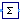 Sum | Output the sum of the elements of the input vector |
| 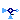 Feedback | Output difference between commanded and feedback input |
| Add | Output the sum of the two inputs |
| Output the sum of the three inputs | |
| Product | Output product of the two inputs |
| Division | Output first input divided by second input |
| 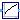 Sqrt | Output the square root of the input (input >= 0 required) |
| Output the sine of the input | |
| Cos | Output the cosine of the input |
| 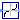 Tan | Output the tangent of the input |
| 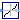 Asin | Output the arc sine of the input |
| 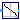 Acos | Output the arc cosine of the input |
| 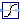 Atan | Output the arc tangent of the input |
| 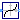 Sinh | Output the hyperbolic sine of the input |
| Cosh | Output the hyperbolic cosine of the input |
| 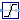 Tanh | Output the hyperbolic tangent of the input |
| Exp | Output the exponential (base e) of the input |
| Log | Output the natural (base e) logarithm of the input (input > 0 required) |
| RealToComplex | Converts cartesian representation to complex |
| PolarToComplex | Converts polar representation to complex |
| ComplexToReal | Converts complex to cartesian representation |
| ComplexToPolar | Converts complex to polar representation |
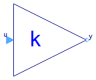
This block computes output y as product of gain k with the input u:
y = k * u;
| Type | Name | Default | Description |
|---|---|---|---|
| Complex | k | Gain value multiplied with input signal |
| Type | Name | Description |
|---|---|---|
| input ComplexInput | u | Input signal connector |
| output ComplexOutput | y | Output signal connector |
block Gain "Output the product of a gain value with the input signal"
parameter Complex k(re(start=1), im(start=0))
"Gain value multiplied with input signal";
public
Interfaces.ComplexInput u "Input signal connector";
Interfaces.ComplexOutput y "Output signal connector";
equation
y = k*u;
end Gain;
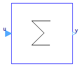
This blocks computes output y as sum of the elements of the input signal vector u:
y = u[1] + u[2] + ...;
Example:
parameter: nin = 3;
results in the following equations:
y = u[1] + u[2] + u[3];
Extends from Interfaces.ComplexMISO (Multiple Input Single Output continuous control block).
| Type | Name | Default | Description |
|---|---|---|---|
| Integer | nin | 1 | Number of inputs |
| Complex | k[nin] | fill(Complex(1, 0), nin) | Optional: sum coefficients |
| Type | Name | Description |
|---|---|---|
| input ComplexInput | u[nin] | Connector of Complex input signals |
| output ComplexOutput | y | Connector of Complex output signal |
block Sum "Output the sum of the elements of the input vector" extends Interfaces.ComplexMISO; parameter Complex k[nin]=fill(Complex(1,0), nin) "Optional: sum coefficients"; equation y = k*u;end Sum;
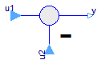
This blocks computes output y as difference of the commanded input u1 and the feedback input u2:
y = u1 - u2;
Example:
parameter: n = 2
results in the following equations:
y = u1 - u2
| Type | Name | Description |
|---|---|---|
| input ComplexInput | u1 | |
| input ComplexInput | u2 | |
| output ComplexOutput | y |
block Feedback "Output difference between commanded and feedback input"Interfaces.ComplexInput u1; Interfaces.ComplexInput u2; Interfaces.ComplexOutput y; equation y = u1 - u2;end Feedback;
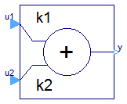
This blocks computes output y as sum of the two input signals u1 and u2:
y = k1*u1 + k2*u2;
Example:
parameter: k1= +2, k2= -3
results in the following equations:
y = 2 * u1 - 3 * u2
Extends from Interfaces.ComplexSI2SO (2 Single Input / 1 Single Output continuous control block).
| Type | Name | Default | Description |
|---|---|---|---|
| Complex | k1 | Complex(1, 0) | Gain of upper input |
| Complex | k2 | Complex(1, 0) | Gain of lower input |
| Type | Name | Description |
|---|---|---|
| input ComplexInput | u1 | Connector of Complex input signal 1 |
| input ComplexInput | u2 | Connector of Complex input signal 2 |
| output ComplexOutput | y | Connector of Complex output signal |
block Add "Output the sum of the two inputs" extends Interfaces.ComplexSI2SO; parameter Complex k1=Complex(1,0) "Gain of upper input"; parameter Complex k2=Complex(1,0) "Gain of lower input"; equation y = k1*u1 + k2*u2;end Add;
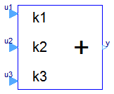
This blocks computes output y as sum of the three input signals u1, u2 and u3:
y = k1*u1 + k2*u2 + k3*u3;
Example:
parameter: k1= +2, k2= -3, k3=1;
results in the following equations:
y = 2 * u1 - 3 * u2 + u3;
Extends from Blocks.Interfaces.BlockIcon (Basic graphical layout of input/output block).
| Type | Name | Default | Description |
|---|---|---|---|
| Complex | k1 | Complex(1, 0) | Gain of upper input |
| Complex | k2 | Complex(1, 0) | Gain of middle input |
| Complex | k3 | Complex(1, 0) | Gain of lower input |
| Type | Name | Description |
|---|---|---|
| input ComplexInput | u1 | Connector 1 of Complex input signals |
| input ComplexInput | u2 | Connector 2 of Complex input signals |
| input ComplexInput | u3 | Connector 3 of Complex input signals |
| output ComplexOutput | y | Connector of Complex output signals |
block Add3 "Output the sum of the three inputs" extends Blocks.Interfaces.BlockIcon; parameter Complex k1=Complex(1,0) "Gain of upper input"; parameter Complex k2=Complex(1,0) "Gain of middle input"; parameter Complex k3=Complex(1,0) "Gain of lower input";Interfaces.ComplexInput u1 "Connector 1 of Complex input signals"; Interfaces.ComplexInput u2 "Connector 2 of Complex input signals"; Interfaces.ComplexInput u3 "Connector 3 of Complex input signals"; Interfaces.ComplexOutput y "Connector of Complex output signals"; equation y = k1*u1 + k2*u2 + k3*u3;end Add3;
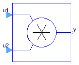
This blocks computes the output y (element-wise) as product of the corresponding elements of the two inputs u1 and u2:
y = u1 * u2;
Extends from Interfaces.ComplexSI2SO (2 Single Input / 1 Single Output continuous control block).
| Type | Name | Description |
|---|---|---|
| input ComplexInput | u1 | Connector of Complex input signal 1 |
| input ComplexInput | u2 | Connector of Complex input signal 2 |
| output ComplexOutput | y | Connector of Complex output signal |
block Product "Output product of the two inputs" extends Interfaces.ComplexSI2SO; equation y = u1*u2;end Product;
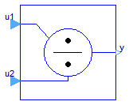
This block computes the output y (element-wise) by dividing the corresponding elements of the two inputs u1 and u2:
y = u1 / u2;
Extends from Interfaces.ComplexSI2SO (2 Single Input / 1 Single Output continuous control block).
| Type | Name | Description |
|---|---|---|
| input ComplexInput | u1 | Connector of Complex input signal 1 |
| input ComplexInput | u2 | Connector of Complex input signal 2 |
| output ComplexOutput | y | Connector of Complex output signal |
block Division "Output first input divided by second input" extends Interfaces.ComplexSI2SO; equation y = u1/u2;end Division;
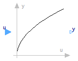
This blocks computes the output y as square root of the input u:
y = sqrt( u );
All elements of the input vector shall be zero or positive. Otherwise an error occurs.
Extends from Interfaces.ComplexSISO (Single Input Single Output continuous control block).
| Type | Name | Description |
|---|---|---|
| input ComplexInput | u | Connector of Complex input signal |
| output ComplexOutput | y | Connector of Complex output signal |
block Sqrt "Output the square root of the input (input >= 0 required)" extends Interfaces.ComplexSISO; equation y = Modelica.ComplexMath.'sqrt'(u);end Sqrt;
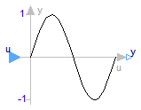
This blocks computes the output y as sine of the input u:
y = sin( u );
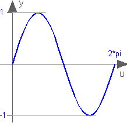
Extends from Interfaces.ComplexSISO (Single Input Single Output continuous control block).
| Type | Name | Description |
|---|---|---|
| input ComplexInput | u | Connector of Complex input signal |
| output ComplexOutput | y | Connector of Complex output signal |
block Sin "Output the sine of the input" extends Interfaces.ComplexSISO; equation y = Modelica.ComplexMath.sin(u);end Sin;
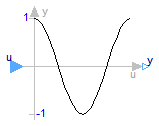
This blocks computes the output y as cos of the input u:
y = cos( u );
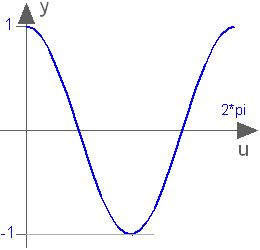
Extends from Interfaces.ComplexSISO (Single Input Single Output continuous control block).
| Type | Name | Description |
|---|---|---|
| input ComplexInput | u | Connector of Complex input signal |
| output ComplexOutput | y | Connector of Complex output signal |
block Cos "Output the cosine of the input" extends Interfaces.ComplexSISO; equation y = Modelica.ComplexMath.cos(u);end Cos;
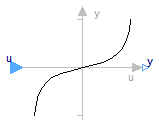
This blocks computes the output y as tan of the input u:
y = tan( u );

Extends from Interfaces.ComplexSISO (Single Input Single Output continuous control block).
| Type | Name | Description |
|---|---|---|
| input ComplexInput | u | Connector of Complex input signal |
| output ComplexOutput | y | Connector of Complex output signal |
block Tan "Output the tangent of the input" extends Interfaces.ComplexSISO; equation y = Modelica.ComplexMath.tan(u);end Tan;
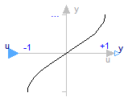
This blocks computes the output y as the sine-inverse of the input u:
y = asin( u );
The absolute values of the elements of the input u need to be less or equal to one (abs( u ) <= 1). Otherwise an error occurs.

Extends from Interfaces.ComplexSISO (Single Input Single Output continuous control block).
| Type | Name | Description |
|---|---|---|
| input ComplexInput | u | Connector of Complex input signal |
| output ComplexOutput | y | Connector of Complex output signal |
block Asin "Output the arc sine of the input" extends Interfaces.ComplexSISO; equation y = Modelica.ComplexMath.asin(u);end Asin;
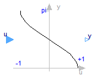
This blocks computes the output y as the cosine-inverse of the input u:
y = acos( u );
The absolute values of the elements of the input u need to be less or equal to one (abs( u ) <= 1). Otherwise an error occurs.

Extends from Interfaces.ComplexSISO (Single Input Single Output continuous control block).
| Type | Name | Description |
|---|---|---|
| input ComplexInput | u | Connector of Complex input signal |
| output ComplexOutput | y | Connector of Complex output signal |
block Acos "Output the arc cosine of the input" extends Interfaces.ComplexSISO; equation y = Modelica.ComplexMath.acos(u);end Acos;
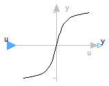
This blocks computes the output y as the tangent-inverse of the input u:
y= atan( u );

Extends from Interfaces.ComplexSISO (Single Input Single Output continuous control block).
| Type | Name | Description |
|---|---|---|
| input ComplexInput | u | Connector of Complex input signal |
| output ComplexOutput | y | Connector of Complex output signal |
block Atan "Output the arc tangent of the input" extends Interfaces.ComplexSISO; equation y = Modelica.ComplexMath.atan(u);end Atan;
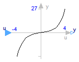
This blocks computes the output y as the hyperbolic sine of the input u:
y = sinh( u );

Extends from Interfaces.ComplexSISO (Single Input Single Output continuous control block).
| Type | Name | Description |
|---|---|---|
| input ComplexInput | u | Connector of Complex input signal |
| output ComplexOutput | y | Connector of Complex output signal |
block Sinh "Output the hyperbolic sine of the input" extends Interfaces.ComplexSISO; equation y = Modelica.ComplexMath.sinh(u);end Sinh;
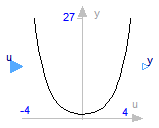
This blocks computes the output y as the hyperbolic cosine of the input u:
y = cosh( u );

Extends from Interfaces.ComplexSISO (Single Input Single Output continuous control block).
| Type | Name | Description |
|---|---|---|
| input ComplexInput | u | Connector of Complex input signal |
| output ComplexOutput | y | Connector of Complex output signal |
block Cosh "Output the hyperbolic cosine of the input" extends Interfaces.ComplexSISO; equation y = Modelica.ComplexMath.cosh(u);end Cosh;
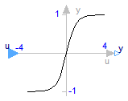
This blocks computes the output y as the hyperbolic tangent of the input u:
y = tanh( u );

Extends from Interfaces.ComplexSISO (Single Input Single Output continuous control block).
| Type | Name | Description |
|---|---|---|
| input ComplexInput | u | Connector of Complex input signal |
| output ComplexOutput | y | Connector of Complex output signal |
block Tanh "Output the hyperbolic tangent of the input" extends Interfaces.ComplexSISO; equation y = Modelica.ComplexMath.tanh(u);end Tanh;
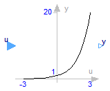
This blocks computes the output y as the exponential (of base e) of the input u:
y = exp( u );

Extends from Interfaces.ComplexSISO (Single Input Single Output continuous control block).
| Type | Name | Description |
|---|---|---|
| input ComplexInput | u | Connector of Complex input signal |
| output ComplexOutput | y | Connector of Complex output signal |
block Exp "Output the exponential (base e) of the input" extends Interfaces.ComplexSISO; equation y = Modelica.ComplexMath.exp(u);end Exp;
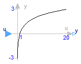
This blocks computes the output y as the natural (base e) logarithm of the input u:
y = log( u );
An error occurs if the elements of the input u are zero or negative.

Extends from Interfaces.ComplexSISO (Single Input Single Output continuous control block).
| Type | Name | Description |
|---|---|---|
| input ComplexInput | u | Connector of Complex input signal |
| output ComplexOutput | y | Connector of Complex output signal |
block Log "Output the natural (base e) logarithm of the input (input > 0 required)" extends Interfaces.ComplexSISO; equation y = Modelica.ComplexMath.log(u);end Log;
Converts the Real inputs re (real part) and im (imaginary part) to the Complex output y.
Extends from Modelica.ComplexBlocks.Interfaces.ComplexSO (Single Output continuous control block).
| Type | Name | Description |
|---|---|---|
| output ComplexOutput | y | Connector of Complex output signal |
| input RealInput | re | |
| input RealInput | im |
block RealToComplex "Converts cartesian representation to complex" extends Modelica.ComplexBlocks.Interfaces.ComplexSO;Blocks.Interfaces.RealInput re; Blocks.Interfaces.RealInput im; equation y=Complex(re,im);end RealToComplex;
Converts the Real inputs len (length, absolute) and phi (angle, argument) to the Complex output y.
Extends from Modelica.ComplexBlocks.Interfaces.ComplexSO (Single Output continuous control block).
| Type | Name | Description |
|---|---|---|
| output ComplexOutput | y | Connector of Complex output signal |
| input RealInput | len | |
| input RealInput | phi |
block PolarToComplex "Converts polar representation to complex" extends Modelica.ComplexBlocks.Interfaces.ComplexSO;Blocks.Interfaces.RealInput len; Blocks.Interfaces.RealInput phi; equation y=Complex(len*cos(phi),len*sin(phi));end PolarToComplex;
Converts the Complex input u to the Real outputs re (real part) and im (imaginary part).
Extends from Modelica.Blocks.Interfaces.BlockIcon (Basic graphical layout of input/output block).
| Type | Name | Description |
|---|---|---|
| output RealOutput | re | |
| output RealOutput | im | |
| input ComplexInput | u |
block ComplexToReal "Converts complex to cartesian representation" extends Modelica.Blocks.Interfaces.BlockIcon;Blocks.Interfaces.RealOutput re; Blocks.Interfaces.RealOutput im; Interfaces.ComplexInput u; equation re=u.re; im=u.im;end ComplexToReal;
Converts the Complex input u to the Real outputs len (length, absolute) and phi (angle, argument).
Extends from Modelica.Blocks.Interfaces.BlockIcon (Basic graphical layout of input/output block).
| Type | Name | Description |
|---|---|---|
| output RealOutput | len | |
| output RealOutput | phi | |
| input ComplexInput | u |
block ComplexToPolar "Converts complex to polar representation" extends Modelica.Blocks.Interfaces.BlockIcon;Blocks.Interfaces.RealOutput len; Blocks.Interfaces.RealOutput phi; Interfaces.ComplexInput u; equation len=(u.re^2 + u.im^2)^0.5; phi=Modelica.Math.atan2(u.im,u.re);end ComplexToPolar;